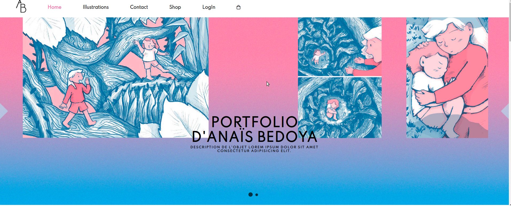
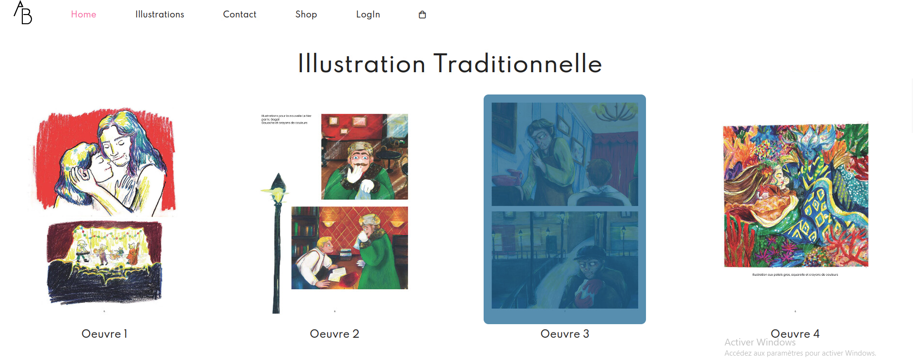
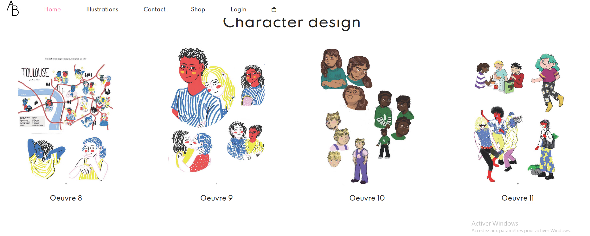
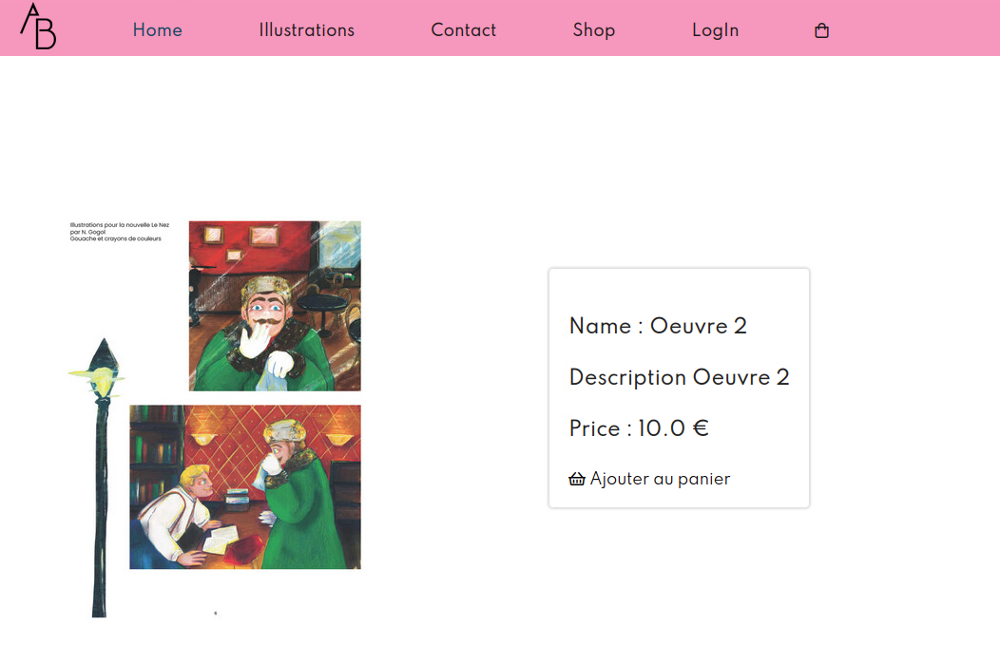

Dans une équipe de 4 étduiants nous avons développé un site web qui permet à une artiste de montrer ses ouvres et d'avoir la possibilité de les vendre. Nous avons utilisé le modèle MVC (modèle vue controlleur) pour construire le site. Pour ce qui concerne le front-end nous avons fait usage de HTML5, CSS et jQuery. Pour ce qui concerne le back-end nous avons utilisé des servlets java dans un serveur Apache. Ma mission principale était de travailé sur le front-end, m ais aprés avoir fini avec ça j'ai travaillé sur la création de plusieurs servlets.

Version desktop

Vue des oeuvres

Vue en détail
